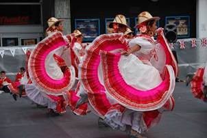

- Gente y trajes en Colima -
El traje típico de hombres y mujeres puede variar significativamente según la región de México, pero en general, incluye elementos básicos como camisas, calzones, faldas, rebozos, y accesorios como sombreros y huaraches.